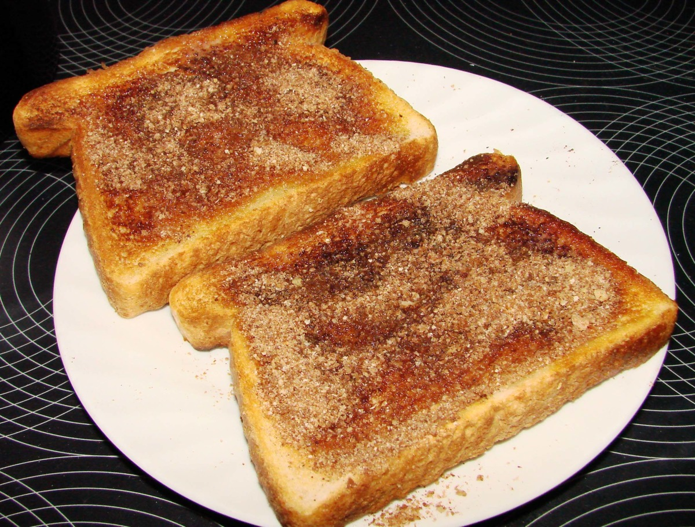

Cinnamon Toast

Description
Cinnamon toast, also known as cinnamon sugar toast, is a breakfast food or snack. It is not very healthy or nutritous.
I'd make like 4 of these as soon as I got home from school.
Ingredients
- 2 slices white bread
- 2 teaspoons butter or margarine
- 2 tablespoons white sugar
- 1 teaspoon ground cinnamon
Steps
- Toast bread slices in a toaster to desired darkness. Spread butter or margarine onto one side of each slice.
- Stir together sugar and cinnamon in a small bowl; sprinkle generously over hot, buttered toast.